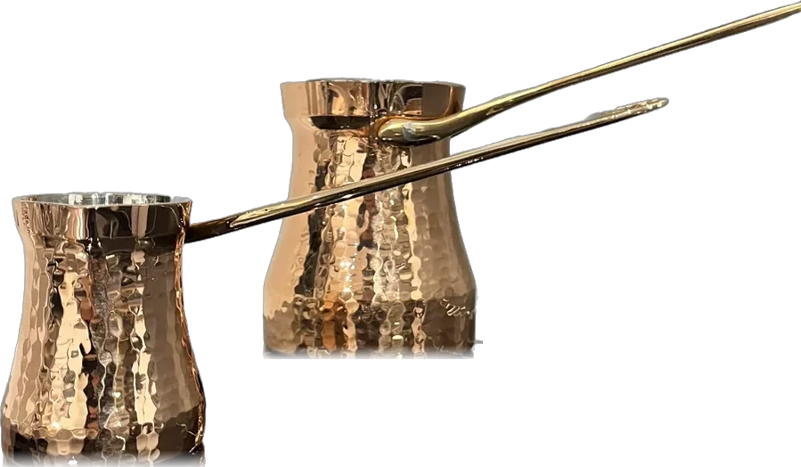
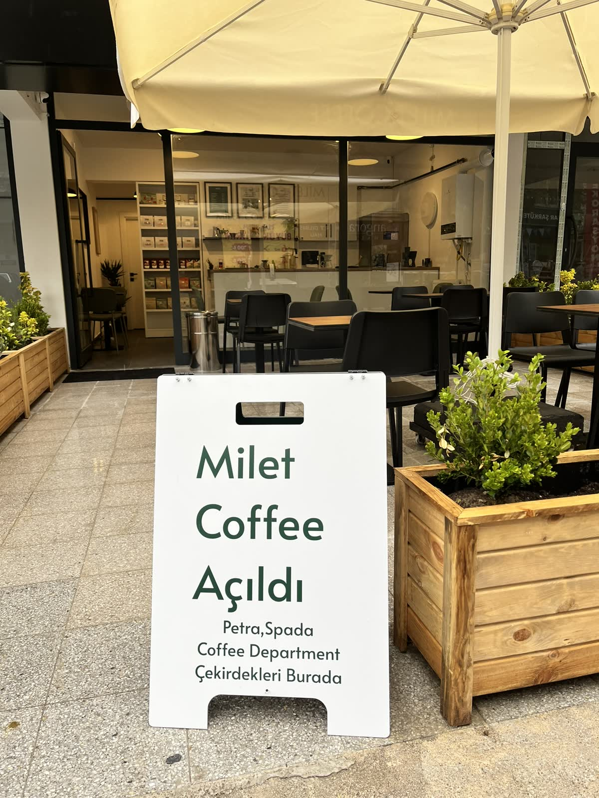

Farklı kavurucular,tek raf.
Bir sonraki favori kahveniz rafımızda sizi bekliyor olabilir. Üç soruluk testi çözün, size uygun çekirdeği birlikte bulalım.

Kahve bir içecekten
fazlası
Seçili mikro lotlar
Petra, Spada, Coffee Department ve yedi kavurucunun daha çekirdekleri tek rafta.
Yalnızca manuel demleme
V60, Chemex, AeroPress, moka pot ve soy cezve. Her fincan kişiye özel.
Kruve ile tadım
Aynı reçeteyle demlenmiş üç çekirdek yan yana. Hangi notaları sevdiğinizi bulun.
Bisikletinle ya da termosunla gel
Raftaki çekirdekler
Bir çekirdeğe dokunun: kökeni, işlemi, tat profili ve önerdiğimiz tarif açılır. Miktarı ve öğütmeyi seçip sepete ekleyin.
Üç soruda size uygun çekirdek
Kahvenizi nasıl demliyorsunuz?
Hangi tatlara yakınsınız?
Kahvenize süt ekler misiniz?
Bu liste örnektir. Gerçek çekirdekler, fiyatlar, tat profilleri ve kavrum tarihleri dükkândan alınıp güncellenecek.
Misafirlerimiz
ne diyor
Kısaltılmış alıntılar.
Farklı kavurucuların kahvelerini tadım menüsüyle karşılaştırabileceğiniz nadir bir işletme.
Ankara'da nitelikli çekirdek çeşitliliği en fazla olan kafe.
Sakin, huzurlu bir atmosfer; özellikle tadım menüsü çok keyifli.
Galeri




Bir kahveyebekleriz
- Adres
- Oğuzhan Asiltürk Caddesi No:1/B, Bahçelievler, Çankaya, Ankara
- Metro
- Bahçelievler istasyonu, Ankaray
- Saatler
- Her gün 23.00'e kadar (açılış saati eklenecek)
- Telefon
- Eklenecek
- E-posta
- iletisim@miletcoffee.com